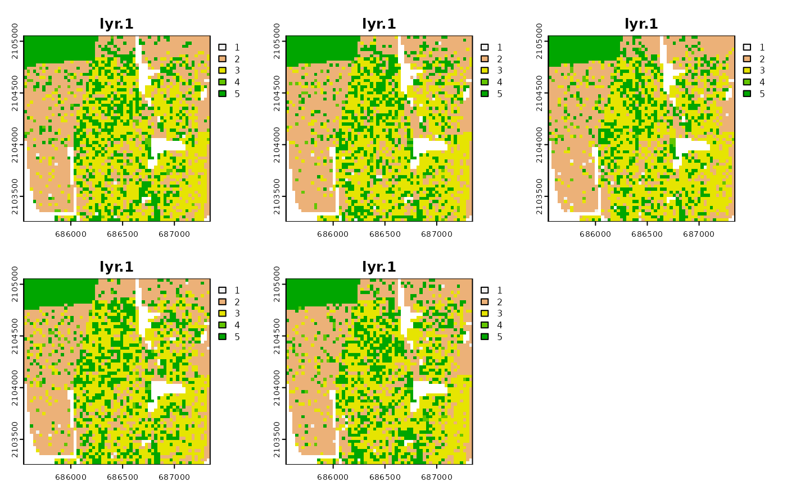
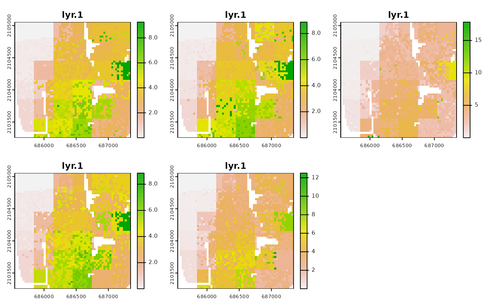

create_densities.RdCalculate local densities of subpopulations (race-specific local densities)
create_densities(x, y, window_size)
| x | RasterStack with realizations |
|---|---|
| y | RasterStack with shares of subpopulations |
| window_size | Size, expressed in the number of cells, of a square-shaped local window for which local densities will be calculated; it is recommended to use the small window_size, i.e., 10 |
a RasterStack containing n local densities. Local density layer is calculated for each realization
dens_raster = create_densities(real_rasters, race_raster, window_size = 10) dens_raster#> class : RasterStack #> dimensions : 60, 60, 3600, 5 (nrow, ncol, ncell, nlayers) #> resolution : 30, 30 (x, y) #> extent : 685545, 687345, 2103255, 2105055 (xmin, xmax, ymin, ymax) #> crs : +proj=aea +lat_1=29.5 +lat_2=45.5 +lat_0=23 +lon_0=-96 +x_0=0 +y_0=0 +ellps=GRS80 +towgs84=0,0,0,0,0,0,0 +units=m +no_defs #> names : layer.1, layer.2, layer.3, layer.4, layer.5 #> min values : 0.005111403, 0.004819739, 0.004763037, 0.005111403, 0.005578907 #> max values : 18.090105, 8.635662, 8.865543, 17.824177, 9.691720 #>plot(dens_raster)